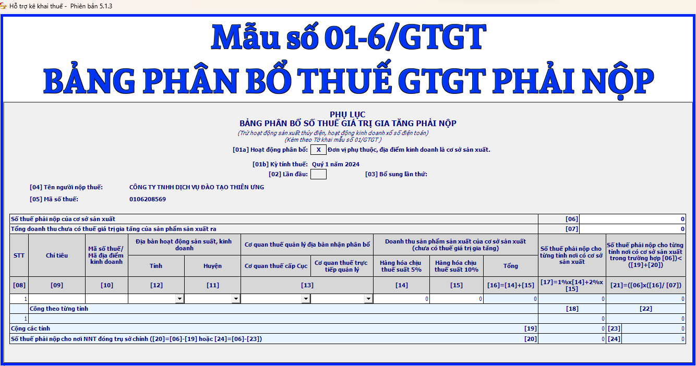

Bảng phân bổ số thuế GTGT phải nộp mới nhất năm 2024 (trừ hoạt động sản xuất thủy điện, hoạt động kính doanh xổ số điện toán) là mẫu số: 01-6/GTGT được ban hành kèm theo Thông tư số 80/2021/TT-BTC. Đây là phụ lục Kèm theo tờ khai thuế giá trị gia tăng mẫu số 01/GTGT
Phụ lục
BẢNG PHÂN BỔ SỐ THUẾ GIÁ TRỊ GIA TĂNG PHẢI NỘP
(Trừ hoạt động sản xuất thủy điện, hoạt động kính doanh xổ số điện toán) (Kèm theo Tờ khai mẫu số 01/GTGT ) [01a] Hoạt động phân bổ: o Đơn vị phụ thuộc, địa điểm kinh doanh là cơ sở sản xuất. o Đơn vị phụ thuộc kinh doanh dịch vụ viễn thông cước trả sau. [01b] Kỳ tính thuế: Tháng 09 năm 2026 /Quý III năm 2026
[04] Tên người nộp thuế:.........................................................................................
[05] Mã số thuế:
Đơn vị tiền: Đồng Việt Nam
Tôi cam đoan số liệu khai trên là đúng và chịu trách nhiệm trước pháp luật về số liệu đã khai./.
|
|||||||||||||||||||||||||||||||||||||||||||||||||||||||||||||||||||||||||||||||||||||||||||||||||||||||||||||||||||||||
Cách kê khai Bảng phân bổ số thuế GTGT phải nộp (trừ hoạt động sản xuất thủy điện, hoạt động kính doanh xổ số điện toán) - mẫu số 01-6/GTGT theo TT 80/2021 như sau:
I. Đối tượng áp dụng
Trường hợp người nộp thuế có các đơn vị phụ thuộc, địa điểm kinh doanh là cơ sở sản xuất tại tỉnh khác với nơi người nộp thuế đóng trụ sở chính (trừ sản xuất thủy điện) thì người nộp thuế phải nộp thêm Phụ lục mẫu số 01-6/GTGT kèm theo tờ khai thuế GTGT mẫu số 01/GTGT.
II. Hướng dẫn kê khai phụ lục mẫu số 01-6/GTGT
* Phần thông tin chung:
Chỉ tiêu [01a]: Người nộp thuế lựa chọn một trong hai hoạt động phân bổ sau:
- Đơn vị phụ thuộc, địa điểm kinh doanh là cơ sở sản xuất.
- Đơn vị phụ thuộc kinh doanh dịch vụ viễn thông cước trả sau.
Chỉ tiêu [01b]: Khai theo thông tin kỳ tính thuế đã kê khai trên tờ khai thuế GTGT mẫu số 01/GTGT.
Chỉ tiêu [02], [03]: Khai theo thông tin đã kê khai trên tờ khai thuế GTGT mẫu số 01/GTGT.
Chỉ tiêu [04], [05]: Khai theo thông tin tên người nộp thuế và mã số thuế của người nộp thuế đã kê khai trên tờ khai thuế GTGT mẫu số 01/GTGT.
* Thông tin chi tiết tại bảng:
Chỉ tiêu [06]:
- Trường hợp tích chọn đơn vị phụ thuộc, địa điểm kinh doanh là cơ sở sản xuất tại chỉ tiêu [01a] thì khai thông tin số thuế phải nộp của cơ sở sản xuất vào chỉ tiêu này.
- Trường hợp tích chọn đơn vị phụ thuộc kinh doanh dịch vụ viễn thông cước trả sau tại chỉ tiêu [01a] thì khai thông tin số thuế phải nộp của dịch vụ viễn thông cước trả sau chỉ tiêu này.
Số liệu để ghi vào chỉ tiêu này do người nộp thuế tự xác định trên cơ sở thông tin phát sinh thực tế của từng hoạt động được phân bổ nghĩa vụ thuế nhưng không được lớn hơn số thuế phải nộp tại chỉ tiêu [40] trên tờ khai thuế GTGT mẫu số 01/GTGT.
Chỉ tiêu [07]:
- Trường hợp tích chọn đơn vị phụ thuộc, địa điểm kinh doanh là cơ sở sản xuất tại chỉ tiêu [01a] thì khai thông tin tổng doanh thu chưa có thuế GTGT của cơ sở sản xuất vào chỉ tiêu này.
- Trường hợp tích chọn đơn vị phụ thuộc kinh doanh dịch vụ viễn thông cước trả sau tại chỉ tiêu [01a] thì không khai thông tin vào chỉ tiêu này.
Số liệu để ghi vào chỉ tiêu này do người nộp thuế tự xác định trên cơ sở thông tin phát sinh thực tế của từng hoạt động được phân bổ nghĩa vụ thuế nhưng không được lớn hơn tổng doanh thu chưa có thuế GTGT tại chỉ tiêu [27] trên tờ khai thuế GTGT mẫu số 01/GTGT.
Cột chỉ tiêu [09]: Khai thông tin tên đơn vị phụ thuộc, tên địa điểm kinh doanh khác tỉnh với nơi người nộp thuế đóng trụ sở chính theo thông tin đăng ký thuế.
Cột chỉ tiêu [10]: Khai thông tin mã số thuế của đơn vị phụ thuộc, địa điểm kinh doanh nếu đã được cấp mã số thuế hoặc mã địa điểm kinh doanh nếu chỉ được cấp mã số địa điểm kinh doanh.
Cột chỉ tiêu [11], [12]: Khai tên huyện, tỉnh nơi có đơn vị phụ thuộc, địa điểm kinh doanh khác tỉnh với nơi đóng trụ sở chính.
Cột chỉ tiêu [13]: Khai thông tin tên cơ quan thuế quản lý địa bàn nhận phân bổ nơi được hưởng khoản thu phân bổ này.
Cột chỉ tiêu [14]:
- Trường hợp tích chọn đơn vị phụ thuộc, địa điểm kinh doanh là cơ sở sản xuất tại chỉ tiêu [01a] thì khai thông tin doanh thu sản phẩm sản xuất (chưa có thuế GTGT) đối với mặt hàng có thuế suất 5% của cơ sở sản xuất vào chỉ tiêu này.
- Trường hợp tích chọn đơn vị phụ thuộc kinh doanh dịch vụ viễn thông cước trả sau tại chỉ tiêu [01a] thì không khai thông tin vào chỉ tiêu này.
Cột chỉ tiêu [15]:
- Trường hợp tích chọn đơn vị phụ thuộc, địa điểm kinh doanh là cơ sở sản xuất tại chỉ tiêu [01a] thì khai thông tin doanh thu sản phẩm sản xuất (chưa có thuế GTGT) đối với mặt hàng có thuế suất 10% của cơ sở sản xuất vào chỉ tiêu này.
- Trường hợp tích chọn đơn vị phụ thuộc kinh doanh dịch vụ viễn thông cước trả sau tại chỉ tiêu [01a] thì khai thông tin doanh thu dịch vụ viễn thông cước trả sau (chưa có thuế giá trị gia tăng) vào chỉ tiêu này.
Cột chỉ tiêu [16]: Khai thông tin tổng doanh thu (chưa có thuế giá trị gia tăng) theo công thức [16]=[14]+[15].
Cột chỉ tiêu [17]:
- Trường hợp tích chọn đơn vị phụ thuộc, địa điểm kinh doanh là cơ sở sản xuất tại chỉ tiêu [01a] thì khai thông tin số thuế phải nộp cho từng tỉnh nơi có cơ sở sản xuất vào chỉ tiêu này. Số thuế phải nộp cho từng tỉnh nơi có cơ sở sản xuất được xác định theo công thức [17] = 1% x [14] + 2% x [15].
- Trường hợp tích chọn đơn vị phụ thuộc kinh doanh dịch vụ viễn thông cước trả sau tại chỉ tiêu [01a] thì khai thông tin số thuế phải nộp cho từng tỉnh nơi có đơn vị phụ thuộc kinh doanh dịch vụ viễn thông cước trả sau vào chỉ tiêu này. Số thuế phải nộp cho từng tỉnh nơi có đơn vị phụ thuộc kinh doanh dịch vụ viễn thông cước trả sau được xác định theo công thức [17] = 2% x [15].
- Doanh thu dùng để xác định tỷ lệ phân bổ là doanh thu thực tế phát sinh của kỳ tính thuế. Trường hợp khai bổ sung làm thay đổi doanh thu thực tế phát sinh thì người nộp thuế phải xác định và phân bổ lại số thuế phải nộp của từng kỳ tính thuế có sai sót đã kê khai bổ sung để xác định số thuế giá trị gia tăng chênh lệch chưa phân bổ hoặc phân bổ thừa cho từng địa phương.
Chỉ tiêu [18]: Kê khai thông tin cộng số thuế GTGT phải nộp tại từng tỉnh nếu có nhiều đơn vị phụ thuộc, địa điểm kinh doanh tại tỉnh đó.
Chỉ tiêu [19]: Kê khai thông tin cộng số thuế GTGT phải nộp tại các tỉnh khác nơi NNT đóng trụ sở chính. Số liệu để ghi vào cột này được xác định theo công thức [19] = Tổng cộng số thuế GTGT phải nộp tại chỉ tiêu [18].
Chỉ tiêu [20]: Kê khai thông tin số thuế phải nộp cho nơi NNT đóng trụ sở chính. Số liệu để ghi vào cột này được xác định theo công thức [20] = chỉ tiêu [06] - chỉ tiêu [19].
Cột chỉ tiêu [21]:
- Trường hợp tích chọn đơn vị phụ thuộc, địa điểm kinh doanh là cơ sở sản xuất tại chỉ tiêu [01a] thì khai thông tin số thuế phải nộp cho từng tỉnh nơi có cơ sở sản xuất vào chỉ tiêu này trong trường hợp người nộp thuế tính để khai, nộp theo công thức tại chỉ tiêu [17] có tổng số thuế giá trị gia tăng phải nộp cho các tỉnh nơi có cơ sở sản xuất lớn hơn tổng số thuế giá trị gia tăng phải nộp của người nộp thuế tại trụ sở chính (chỉ tiêu [06] < chỉ tiêu [19] + chỉ tiêu [20]).
- Người nộp thuế phân bổ số thuế phải nộp cho các tỉnh nơi có cơ sở sản xuất theo công thức sau: Số thuế giá trị gia tăng phải nộp cho từng tỉnh nơi có cơ sở sản xuất bằng (=) số thuế giá trị gia tăng phải nộp của người nộp thuế tại trụ sở chính nhân (x) với tỷ lệ (%) doanh thu theo giá chưa có thuế giá trị gia tăng của sản phẩm sản xuất ra tại từng tỉnh trên tổng doanh thu theo giá chưa có thuế giá trị gia tăng của sản phẩm sản xuất ra của người nộp thuế. Chỉ tiêu [21] = Chỉ tiêu [06] x (chỉ tiêu [16] / chỉ tiêu [07]).
- Doanh thu dùng để xác định tỷ lệ phân bổ là doanh thu thực tế phát sinh của kỳ tính thuế. Trường hợp khai bổ sung làm thay đổi doanh thu thực tế phát sinh thì người nộp thuế phải xác định và phân bổ lại số thuế phải nộp của từng kỳ tính thuế có sai sót đã kê khai bổ sung để xác định số thuế giá trị gia tăng chênh lệch chưa phân bổ hoặc phân bổ thừa cho từng địa phương.
- Trường hợp tích chọn đơn vị phụ thuộc kinh doanh dịch vụ viễn thông cước trả sau tại chỉ tiêu [01a] thì không phải khai thông tin vào chỉ tiêu này.
Chỉ tiêu [22]: Kê khai thông tin cộng số thuế GTGT phải nộp tại từng tỉnh nếu có nhiều đơn vị phụ thuộc, địa điểm kinh doanh tại tỉnh đó.
Chỉ tiêu [23]: Kê khai thông tin cộng số thuế GTGT phải nộp tại các tỉnh khác nơi NNT đóng trụ sở chính. Số liệu để ghi vào cột này được xác định theo công thức [23] = Tổng cộng số thuế GTGT phải nộp tại chỉ tiêu [22].
Chỉ tiêu [24]: Kê khai thông tin số thuế phải nộp cho nơi NNT đóng trụ sở chính. Số liệu để ghi vào cột này được xác định theo công thức [24] = chỉ tiêu [06] - chỉ tiêu [23].
* Phần ký tên, đóng dấu:
- Người đại diện theo pháp luật của NNT hoặc người đại diện hợp pháp của người nộp thuế ký tên, đóng dấu hoặc ký điện tử để nộp tờ khai đến cơ quan thuế và chịu trách nhiệm trước pháp luật về số liệu đã khai. Trường hợp đại lý thuế khai thay cho người nộp thuế thì người đại diện theo pháp luật của đại lý thuế ký tên, đóng dấu hoặc ký điện tử thay cho NNT và ghi thêm thông tin họ và tên nhân viên đại lý thuế trực tiếp thực hiện khai thuế và số chứng chỉ hành nghề của nhân viên này vào thông tin tương ứng.

=======================
Các bạn muốn thành thạo các kỹ năng kê khai làm báo cáo thuế, xử lý hóa đơn chứng từ, xử lý doanh thu - chi phí, cân đối lãi lỗ của doanh nghiệp thì các bạn thể tham gia Khóa Học Thực Hành Kế Toán Thuế tại Công ty đào tạo Kế Toán Diệu Tâm
Chi tiết về khóa học các bạn xem tại đây nhé:
Học kế toán Thuế thực hành theo công việc thực tế
Học kế toán Thuế thực hành theo công việc thực tế
===================================================